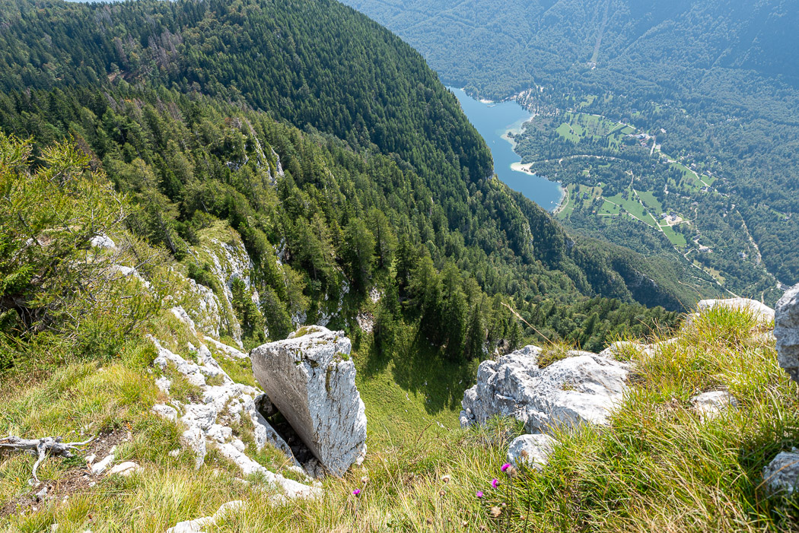
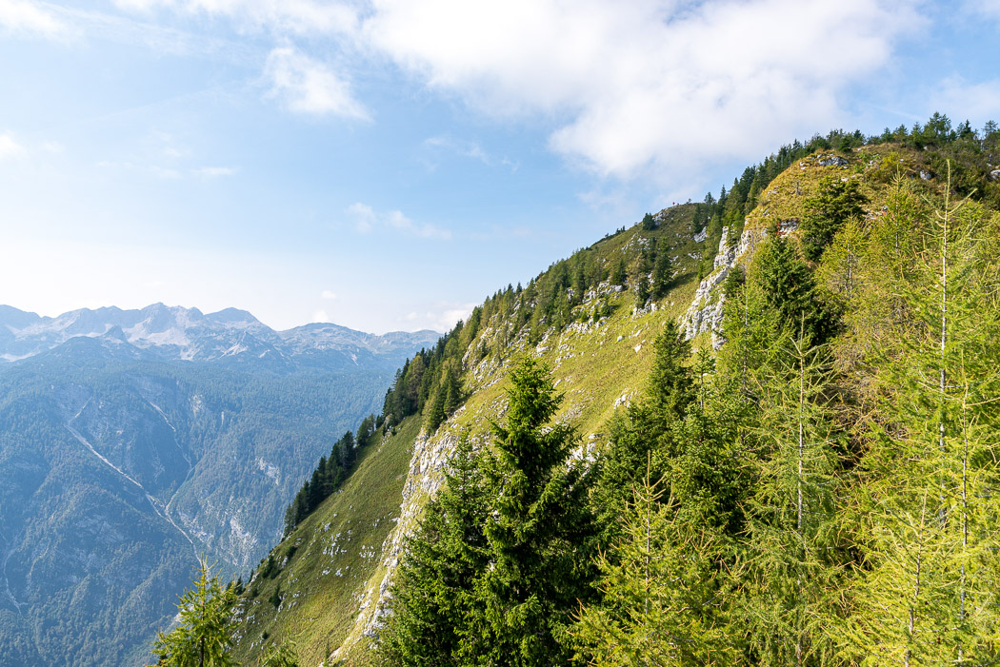
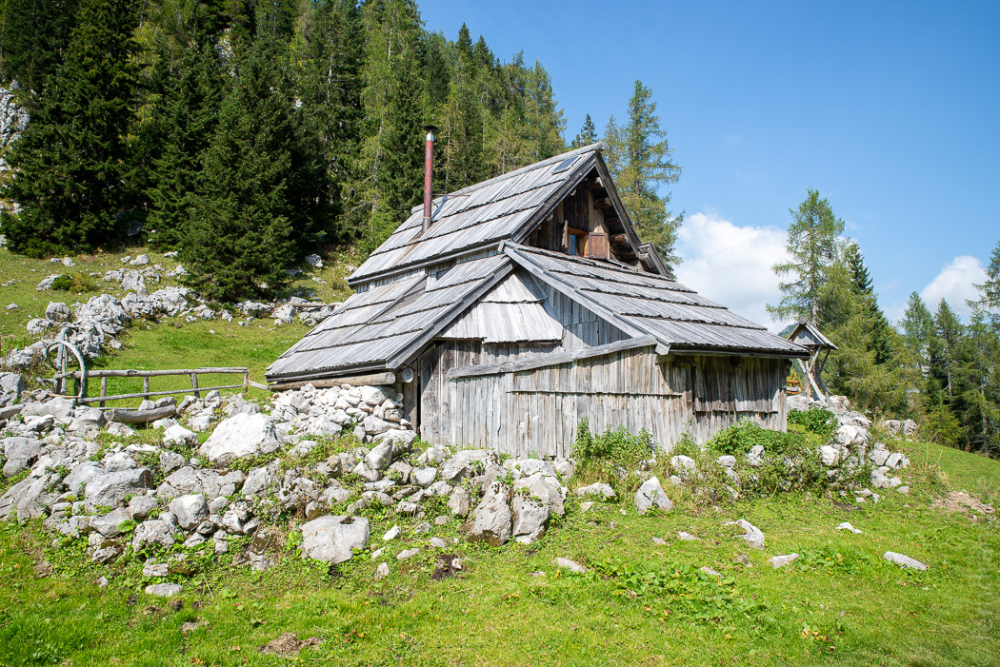
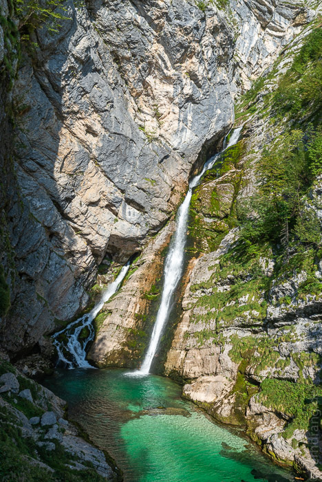
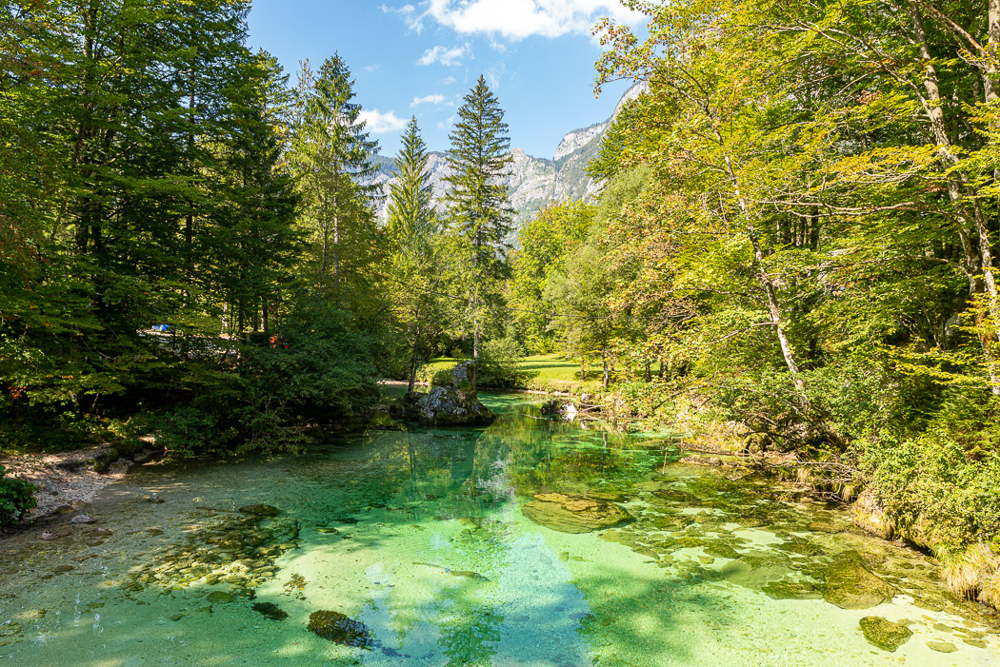
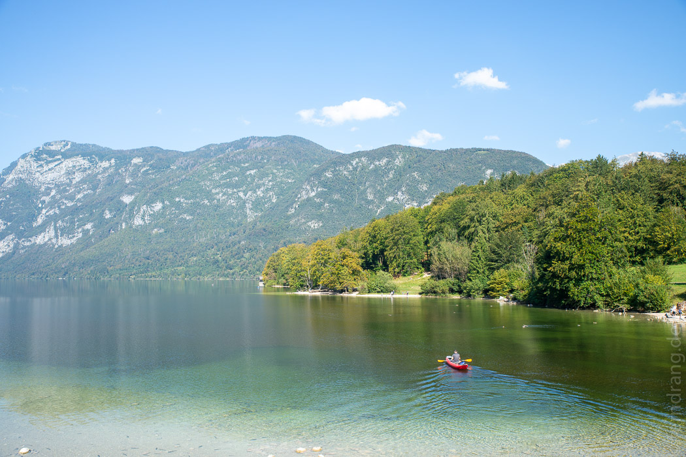
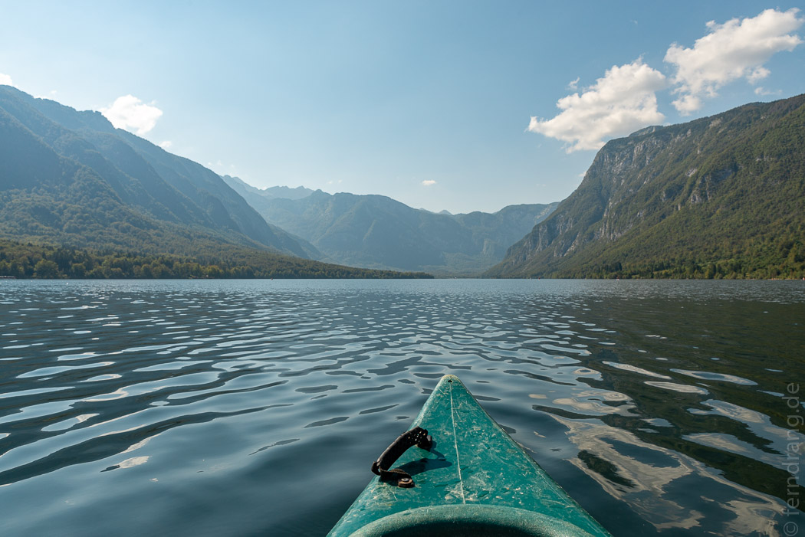

Ein paar Täler hinter Bled liegt der Bohinj-See (Wocheiner See). Wir haben den Hinweg für eine Wanderung genutzt. Hinter dem kleinen Ort Stara Fuzina, der fast am See liegt, beginnt eine Mautstraße in die Berge. Auf 1100m liegt die Vogar-Hochebene. Auf einer Rundwanderung sind wir durch schöne, recht heimisch anmutende Wälder gekommen und später über ausgesetzte Felsen die letzten Meter zum 1761m hohen Pršivec hoch gekraxelt. Die umliegenden Berge sind noch alle baumbestanden und im Tal schimmert der große Bohinj-See in der Sonne. Etwas weiter konnten wir uns auf einer kleinen Almhütte mit slowenischem Radler belohnen.
  Der Weg zu unserer Unterkunft „Planinski Dom Savica“ führte am See entlang. Auch von nahem war er hübsch mit seiner grünen Farbe und den dichten Tannenwälder an den umliegenden Hängen. Die Berge sind auch schon höher als in Bled. Aber ohne Kirche in der Mitte wirkte er gegen den Bleder See geradezu langweilig.
Der „Slap Savica“ (Savica-Wasserfall) ist ein beliebtes Ausflugsziel und unser Hotel war bis vor kurzem auch nur ein Restaurant. Jetzt gibt es auch ein paar Zimmer. Das Restaurant macht schon um 17:30 Uhr zu. Aber nach fast 5 Stunden wandern waren wir früh genug hungrig und müde, um uns daran nicht zu stören.
Am nächsten Morgen sind wir nach einem guten Frühstück wieder zum See aufgebrochen. Mit dem Mietwagen wird schnell klar, was die slowenische Wirtschaft wirklich antreibt: Parkplätze. Jeder Flecken am See, auf dem man ein Auto abstellen könnte, hat eine Schranke bekommen. Die Parkuhr dreht sich fast so schnell wie in der Kölner Innenstadt.
Der Spaziergang um den See war etwas unspektakulär. Hier kommen die Leute zum Baden hin. Als Wanderer gibt es nicht viel zu entdecken. Wir haben uns daher nach der Hälfte in einen Bus gesetzt und sind am Ausgangspunkt aufs Kanu umgestiegen.
 